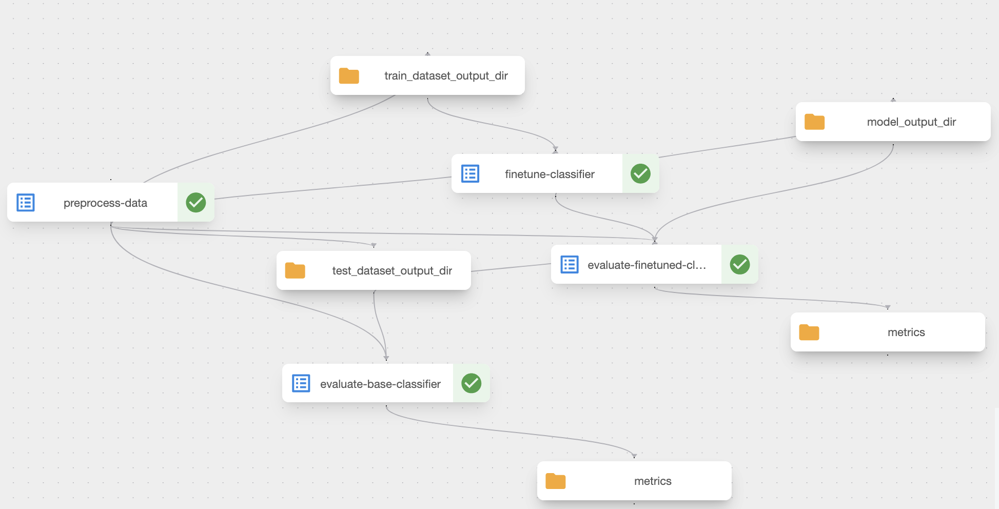
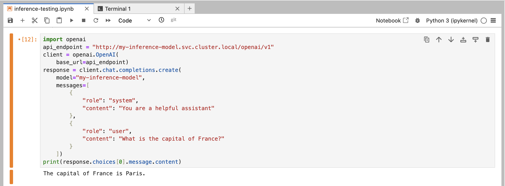

flowchart LR
A(Foundation dataset) --> B(Foundation model training)
B --> C(Model finetuning)
H(Finetuning dataset) --> C
C --> G[Model evaluation]
G --> C
C --> D{Serve model}
D --> E[Research output]
D --> F[Ad-hoc testing]
Using Kubeflow to Build HPC Tailored for the AI/ML Lifecycle
Andrew Esterson
University College London
When we say ML Lifecycle, what do we mean?
Our platform
For UCL researchers (and external users in the long term)
Uses Kubeflow, an Open Source project designed to deploy into a Kubernetes cluster
Our cluster currently has ~8TB of memory, ~600 cpu cores, >4TB total GPU VRAM
Built on top of a larger UCL on-prem cluster (which means the total resources above are flexible)
So what does it do?
Converts this
flowchart LR
A(Foundation dataset) --> B(Foundation model training)
B --> C(Model finetuning)
H(Finetuning dataset) --> C
C --> G[Model evaluation]
G --> C
C --> D{Serve model}
D --> E[Research output]
D --> F[Ad-hoc testing]
So what does it do?
Into this
Workflow
submit_pipeline.py
Workflow
model_spec.yaml
Workflow
Workflow
flowchart LR
subgraph S4 [Centralised UCL Storage]
A(Foundation dataset)
H(Finetuning dataset)
end
A --> B(Foundation model training)
H --> C(Model finetuning)
subgraph S1 [Kubeflow Pipelines]
B --> C
C --> G[Model evaluation]
G --> C
end
subgraph S2 [Kserve]
D{Serve model}
end
subgraph S3 [Kubeflow Notebooks]
F[Ad-hoc testing]
end
A --> B
C --> D
D --> E(Research Output)
D --> F
style S1 fill:#add8e6,fill-opacity:0.25,stroke:#5b9bd5,stroke-width:1px
style S2 fill:#90ee90,fill-opacity:0.25,stroke:#70ad47,stroke-width:1px
style S3 fill:#f0ee90,fill-opacity:0.25,stroke:#f0ad47,stroke-width:1px
style S4 fill:#d9b3ff,fill-opacity:0.25,stroke:#9b59b6,stroke-width:1px
Workflow
- All of these components share common:
- storage
- resource quotas
- authentication
Currently our users are…
Serving a model using Kserve to run OCR without data leaving the UCL network
Finetuning a language model to use for a RAG application
Training foundation vision models for medical imaging
We’d like to give access to more users to explore loads more problems!
Challenges
- It takes time for people to adapt to a new framework
- We need to write really good documentation!
- Users can’t be expected to be Kubernetes experts
- We need to abstract away complexity
- The ecosystem for HPC on Kubernetes is still developing
- Meaning we have to do more internal plumbing than usual
Where do we go from here?
Expanding access to more users so that we can write better docs, fix bugs and improve performance
Potentially expand the services we offer
Build higher-level abstractions and integrations (e.g Github Actions)
Linking the cluster to a cloud provider so that we can dip into the cloud when demand spikes?